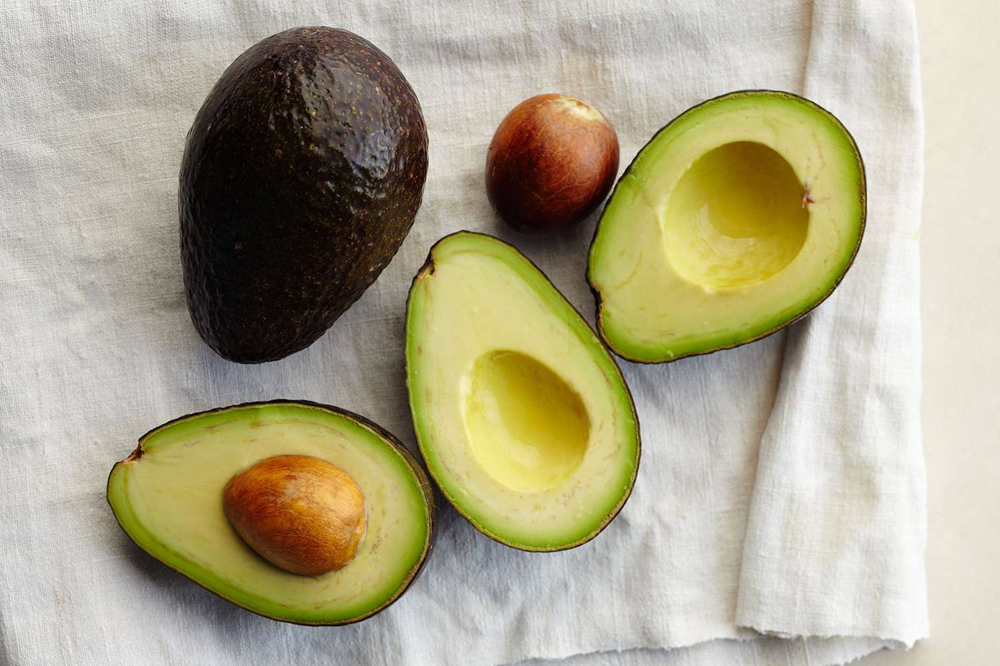
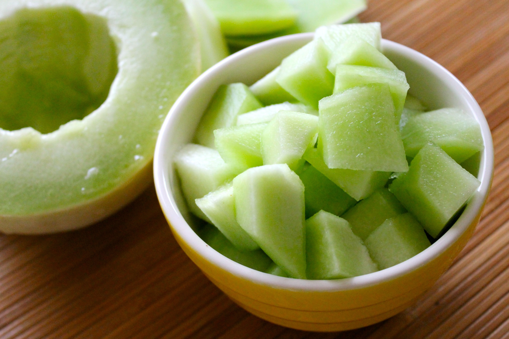

Yellow and Green Fruits

Bananas: 4 stars
Taste: Bananas are very sweet, as they’re one of the most sugary fruits. Still, their flavor is easygoing, which means they pair well with many dishes. Bananas have a classic taste that never gets old, and if it does get old, you could always add some peanut butter.
Structure: Bananas are amazingly convenient, and they are zero mess. When they’re ripe, they’re super easy to peel, they have a soft texture that doesn’t hurt your teeth to bite, and they are not super juicy like a pear so they are very neat to eat. They take zero preparation since you don’t even need to wash them due to their protective peel, which provides a clean little handle that you can hold as you eat the banana so your hands don’t get messy, like an ice cream sandwich wrapper! Their color is pastel and pretty, which I think matches their sweet yet mild taste.
Goes well with: Peanut butter, of course. Peanut butter and banana are heavenly, especially if you add some chocolate chips or raisins. It also goes well with Nutella, and it’s great as an ice cream flavor. It’s also pretty good on hot toast, especially if you also add peanut butter or Nutella to the toast.
Avocado: 4.5 stars
Taste: Avocado has a rich, creamy flavor that is both subtle and satisfying. It isn’t sweet or tangy like other fruits, but its mild, buttery taste makes it incredibly versatile. The smooth, silky texture enhances its appeal, adding a luxurious feel to every bite. Whether enjoyed on its own or as part of a dish, avocado’s unique flavor profile makes it a standout fruit.
Structure: The structure of an avocado is part of its charm. Its rough, dark green skin encases a smooth, light green flesh that is soft and creamy. The large pit in the center is easy to remove, though it does require a bit of caution when slicing the fruit. The flesh is easy to scoop out with a spoon, making it simple to prepare. However, avocados do have a narrow window of perfect ripeness, and they can go from underripe to overripe quickly, which can be frustrating.
Goes well with: Avocados are incredibly versatile and pair well with a wide range of foods. They are a staple in guacamole, adding a creamy richness that complements the tanginess of lime and the heat of jalapeños. Sliced avocado is a fantastic addition to salads, sandwiches, and toast, providing a creamy texture that balances other flavors. Avocado also works well in smoothies, giving them a rich, creamy consistency without overpowering the other ingredients. Additionally, avocado can be used in desserts, like avocado chocolate mousse, where its creamy texture shines.
Honeydew: 4 stars
Taste: Honeydew is a sweet and refreshing fruit with a mild flavor that’s quite pleasant. Its sweetness is subtle, making it a great choice for those who prefer a less intense taste. The best honeydew has a juicy, almost syrupy quality that is very satisfying.
Structure: Honeydew has a smooth, pale green flesh that is firm yet tender. The exterior is a pale, creamy yellow or green rind that is easy to slice through. Inside, the flesh is succulent and juicy, though the seeds in the center need to be scooped out. Honeydew is easy to prepare and eat, but finding one that is perfectly ripe can sometimes be a bit of a challenge.
Goes well with: Honeydew is quite versatile and pairs wonderfully with other fruits in a salad, especially when combined with cantaloupe and watermelon. It also complements salty and savory foods well, like prosciutto, in a classic Italian appetizer. Honeydew can be blended into smoothies for a refreshing, hydrating boost, or even incorporated into chilled soups for a unique twist.